Lecture Notes
Environment & World Design
- In XR the user owns the viewpoint, so cuts, close-ups and forced camera moves are lost and attention must be invited through composition, light, form, sound and motion.
- Design at 1:1 (1 unit = 1 metre) with the user’s body as the ruler, check scale from inside the headset, and break scale only deliberately.
- Place content within comfortable reach, mid-field and far-field zones and head-rotation limits, and design sightlines as the closest thing XR has to planned shots.
- Guide users with Lynch’s paths, edges, districts, nodes and landmarks, and with signifiers built into the world, using signs and arrows only as a last resort.
- Light directs the eye where a camera cannot, but on a standalone headset’s GPU budget you should bake what does not move and spend realtime lighting sparingly.
- Let the space tell its own story, and remember that environment choices such as ceiling height, patterns, edges and stairs are comfort decisions as much as locomotion is.
1 Overview
Duration: 1 hour
Content creation for a medium in which the user owns the viewpoint. Every technique film and conventional games use to control attention – cutting, framing, camera movement – is either unavailable or actively harmful in XR. This session covers what replaces them.
2 Learning Objectives
By the end of this lecture, students will be able to:
- Compose a scene that guides attention without taking camera control from the user
- Apply human-scale proportion rules, and justify any deliberate departure from them
- Place content within comfortable viewing and reach zones
- Use sightlines, landmarks, form and light for wayfinding instead of UI
- Defend environment decisions against comfort, legibility and performance criteria
3 1. The User Owns the Viewpoint
Film directs attention with the camera: a cut chooses what you see next, a close-up tells you what matters, and a camera move carries you through a space. Conventional games borrow the same tools, and in third-person games the camera is often moved for the player.
In XR the user’s head is the camera. That removes the director’s main tools:
- A forced camera move creates exactly the visual–vestibular conflict that causes simulator sickness (Weeks 3 and 5).
- A cut breaks Place Illusion: one moment you are somewhere, the next you are not.
- A close-up is impossible: the user decides how close to stand.
What remains is the environment itself. Attention has to be invited by composition (what is placed where), light (where the eye is drawn), form (what looks usable and where to go), and sound and motion (what turns the head; spatial audio is covered in Week 10).
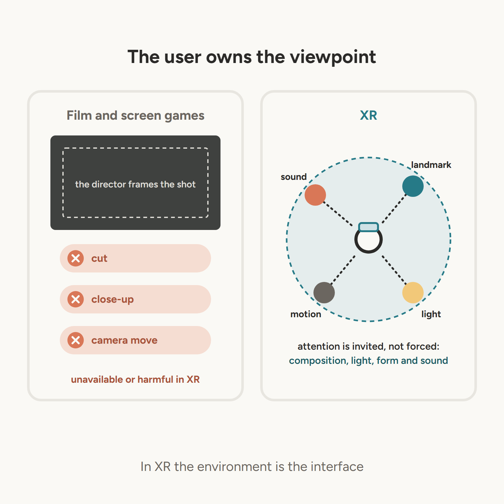
The practical consequence is that environment design is not decoration added at the end. It is the interaction design for anything the user has to find, notice or understand.
4 2. Scale and Proportion
4.1 2.1 Designing at 1:1
In a headset, the user’s own body is the measuring stick. Everyone has a lifetime of experience of how high a door is, how far away a table edge sits, and how tall a step should be. When a virtual space disagrees with that experience, users notice immediately, even if they cannot say what is wrong.
| Object | Typical real size |
|---|---|
| Standing eye height | ~1.5-1.7 m (varies by person) |
| Seated eye height | ~1.1-1.3 m |
| Door | ~2.0 m high, 0.8-0.9 m wide |
| Table or desk | ~0.72-0.76 m |
| Kitchen counter | ~0.9 m |
| Stair riser | ~0.15-0.18 m |
| Ceiling (domestic) | ~2.4-2.7 m |
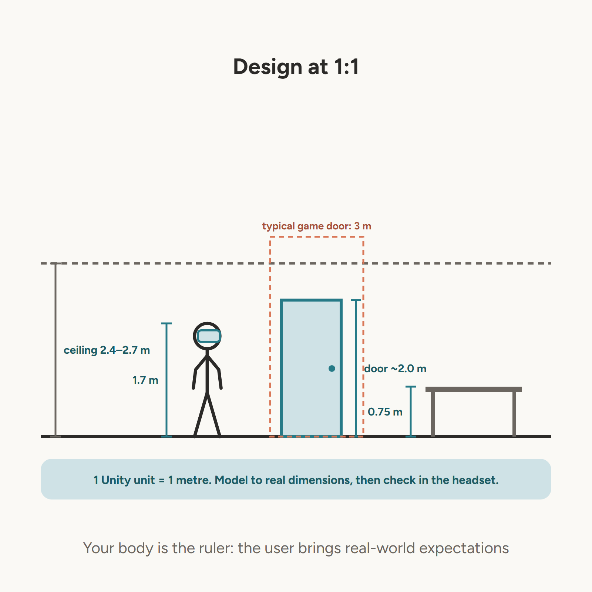
Environments built to game conventions are often scaled up, with wide corridors and tall doors, so that a third-person camera fits inside them. Viewed in a headset at the correct eye height, the same spaces feel cavernous and empty. In Unity, 1 unit = 1 metre: model to real dimensions from the start, and import assets at the right scale rather than fixing them later.
4.2 2.2 When Scale Goes Wrong
Incorrect scale changes how users perceive themselves as much as the world:
- If the world is too large, users feel small, even child-like.
- If it is too small, users feel like giants walking through a model.
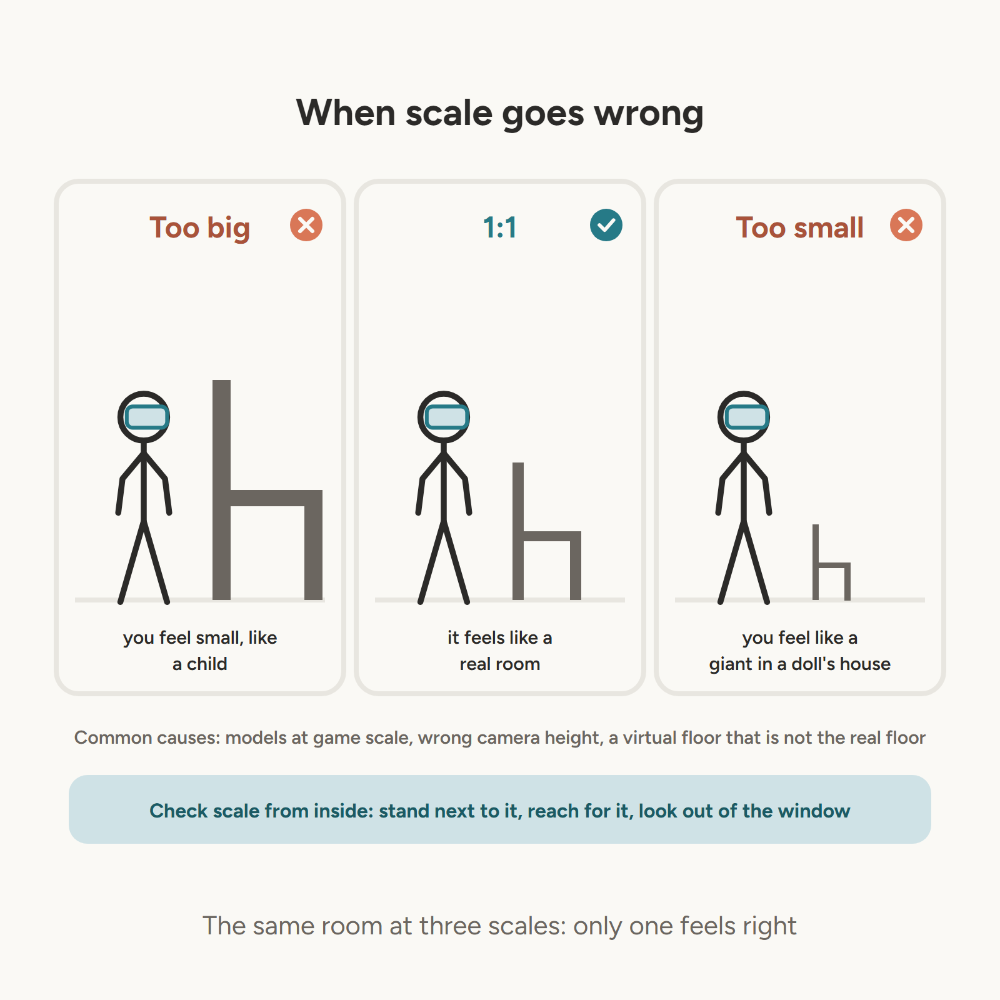
Common causes:
- Assets modelled at arbitrary or game scale and never checked
- Camera height set in code rather than taken from tracking, so a seated user sees the world from standing height or vice versa
- A virtual floor that does not match the real floor, so users reach down for objects that are not there (use a floor-level tracking origin for standing experiences)
Scale errors are almost invisible in the editor and obvious the moment you put the headset on. Check scale from inside: stand next to objects, reach for them, sit at a table, look out of a window.
4.3 2.3 Breaking Scale on Purpose
Sometimes the wrong scale is the point. Making the user tiny in a giant kitchen, or a giant above a miniature city, is a powerful effect precisely because the body notices. If you break 1:1, do it deliberately, make it obvious, and keep the user’s interaction distances comfortable even when the world is not.
5 3. Comfort Zones and Sightlines
5.1 3.1 Where Content Can Comfortably Go
Content is comfortable to look at and use only within certain distances and angles:
| Zone | Distance | Use it for |
|---|---|---|
| Reach | ~0.5-0.7 m | Objects to touch, grab or press |
| Mid field | ~1-3 m | UI, text, focal content |
| Far field | Beyond ~10 m | Scenery and landmarks: stereo depth contributes little, so depth is read from size, occlusion and perspective |
Content closer than about 0.5 m is hard to focus on for long, because of the vergence–accommodation conflict covered in Week 3.
Head rotation matters too. Alger (2015) suggests that turning the head about 30° left or right is comfortable, and about 55° is a practical maximum. Looking down is easier than looking up. Important content belongs in front of the user; secondary content can sit to the sides; nothing essential should be only behind them unless the user is given a reason to turn.
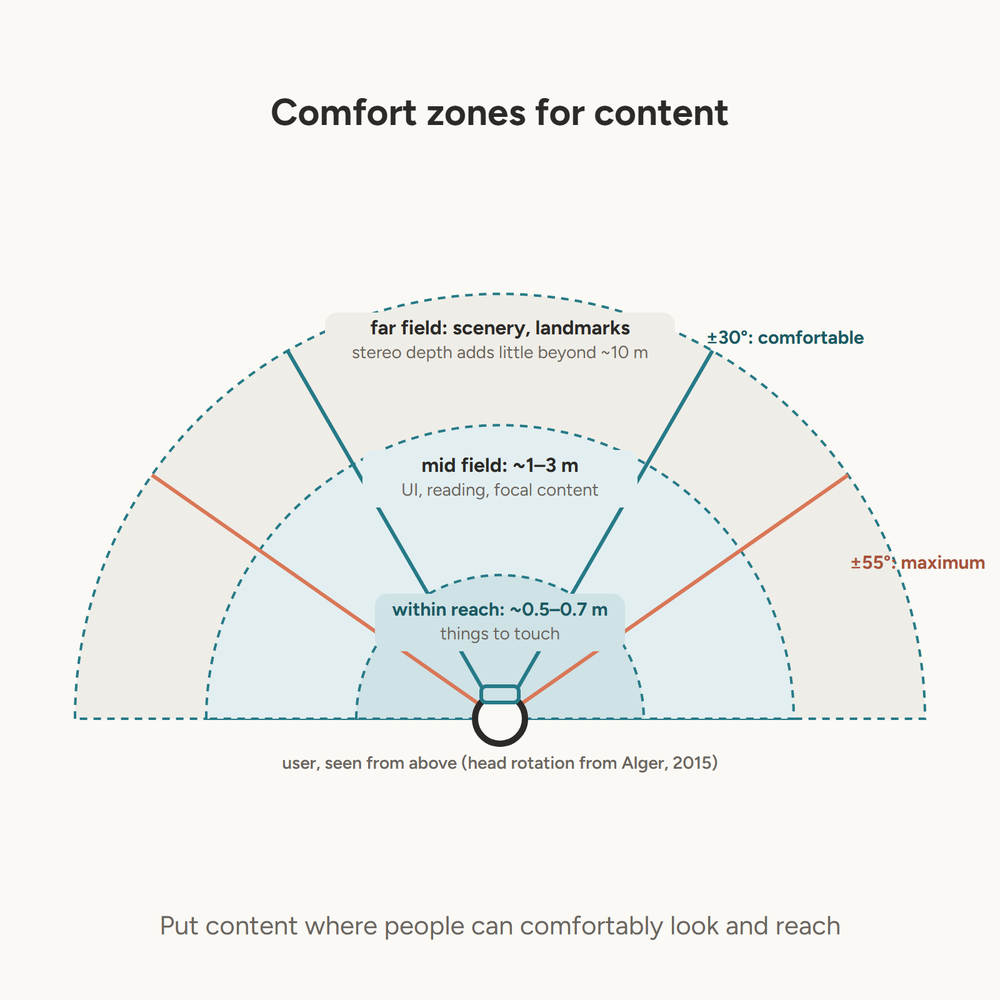
5.2 3.2 Sightlines
A sightline is a view the user is likely to take: the first view on arrival, the view at a turn in a corridor, the view through a doorway. These are the closest thing XR has to planned shots, and they should be designed as carefully.
- Frame the important thing: doorways, arches and gaps between objects act as natural frames.
- Align it with the direction of travel, so the user sees it while moving towards it.
- Light it so it stands out from its surroundings (Section 5).
- Leave negative space around it, so it is not lost in clutter.
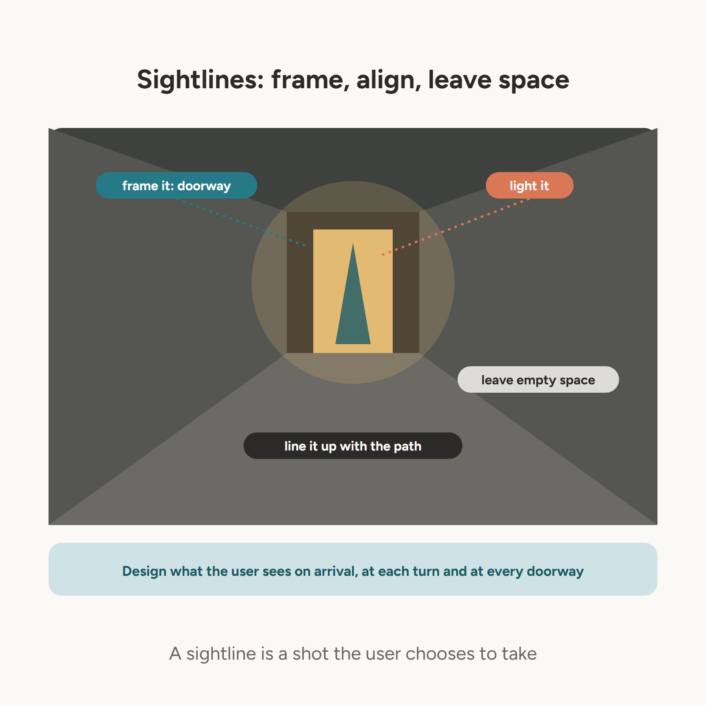
Plan sightlines on the floor plan, then walk them in the headset: a view that works in the editor’s scene camera may be blocked at real eye height.
6 4. Wayfinding and Affordance in 3D
6.1 4.1 Wayfinding
Kevin Lynch’s study of how people form mental maps of cities (Lynch, 1960) identified five elements. They are just as useful for virtual spaces:
| Element | Meaning | In an XR environment |
|---|---|---|
| Paths | Routes people move along | Corridors, trails, lit routes, worn floors |
| Edges | Boundaries that limit movement | Walls, water, cliffs, the play-area boundary |
| Districts | Areas with a recognisable character | Zones with a distinct colour, material or soundscape |
| Nodes | Junctions where choices are made | Rooms, plazas, crossroads |
| Landmarks | Distinctive reference points | Tall, unique, lit objects visible from far away |
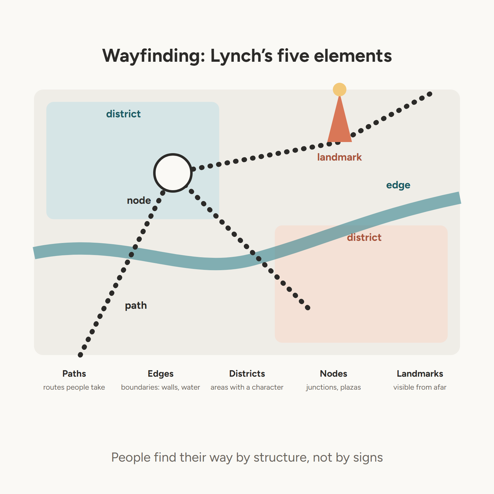
A good landmark is visible from many places, unique in shape or colour, and placed where decisions are made. Signs, arrows and floating markers are a last resort: they are UI, and they break presence (Week 6). Use them when the space alone cannot carry the information, such as safety-critical instructions.
6.2 4.2 Affordance Through Form
Signifiers: perceivable cues that show where and how to act. In a well-designed environment, the signifiers are part of the world rather than overlaid on it:
- Shape: handles say pull, raised buttons say press, a ledge says stop here.
- Consistency: one visual signal, such as a rim, a glow or a particular material, used for every interactive object and never for scenery. If some scenery looks interactive and some interactive objects do not, users stop trusting the signal.
- Wear: scuffed floors, worn handles and fingerprints show where people have been and what they touch.
- Light: a pool of light says come here.
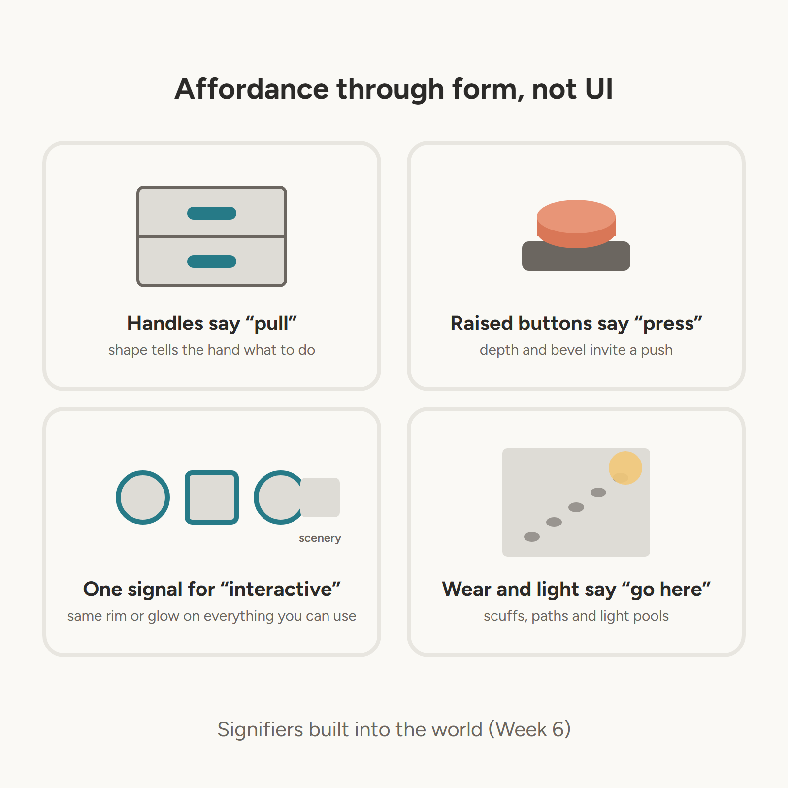
The test is simple: can a first-time user tell where to go and what to touch, without being told? This is exactly what the Week 9 practical’s peer critique checks.
7 5. Lighting as Direction
7.1 5.1 Using Light to Guide Attention
When the user can look anywhere, light decides where they look first. The eye is drawn to:
- The brightest area, and to strong luminance contrast
- Warm against cool colour
- Motion against a still background
- Faces and figures
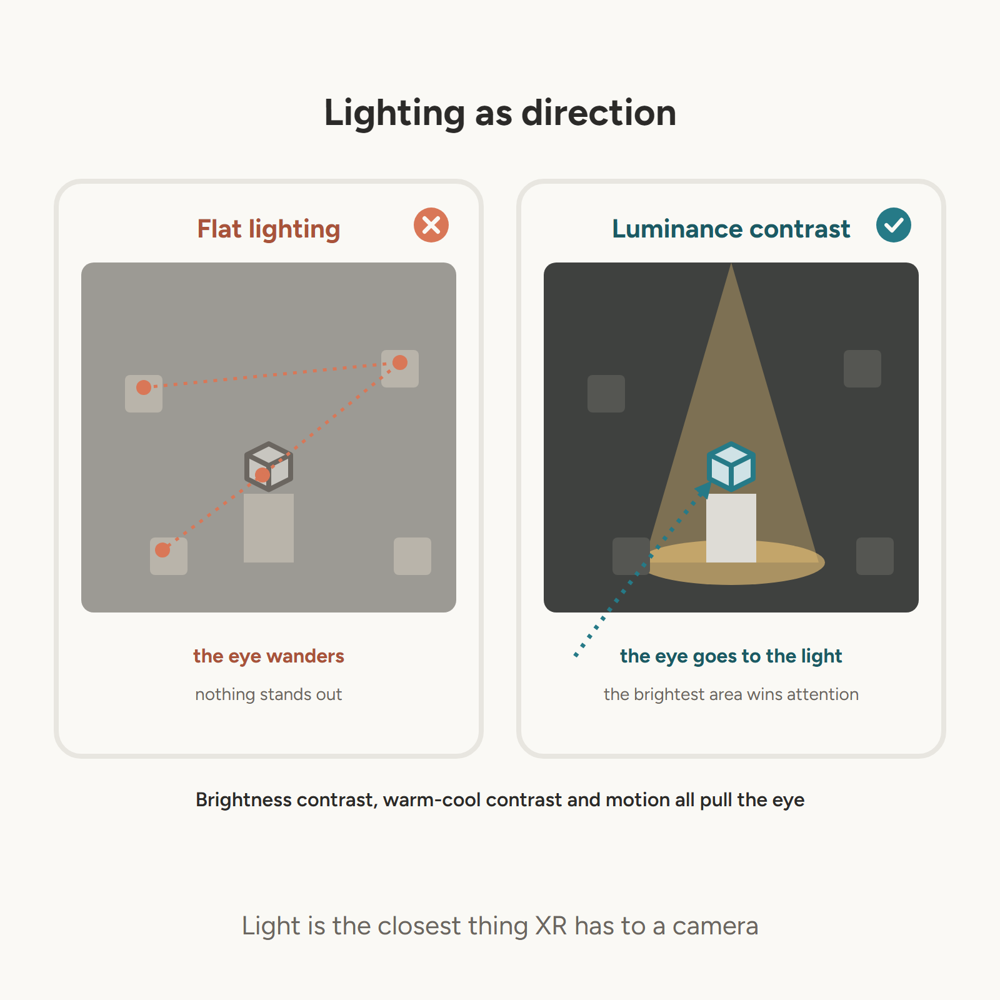
Flat, even lighting gives the eye nowhere to go. A lit doorway at the end of a dim corridor, or a pool of light on the object that matters, does the job a camera cut does in film. Two cautions: a scene that is too dark makes navigation and footing hard (and makes the user’s real-world surroundings feel more present than the virtual ones), and rapid flicker or strobing must be avoided for photosensitive users.
7.2 5.2 Lighting on a Mobile GPU Budget
A standalone headset renders two views at 72-120 Hz on a mobile GPU. At 90 Hz the whole frame, for both eyes, must be finished in about 11.1 ms (13.9 ms at 72 Hz). Dropping frames is not just a visual flaw: it causes judder and contributes to discomfort (Week 11 covers performance in depth).
| Technique | Runtime cost | Use for |
|---|---|---|
| Baked lightmaps | Very low: lighting is precomputed into textures | Static walls, floors and furniture |
| Light probes | Low | Lighting moving objects so they match a baked scene |
| Reflection probes (baked) | Low | Shiny and metallic surfaces |
| Realtime lights | High, and much higher with realtime shadows | One key light, if any |
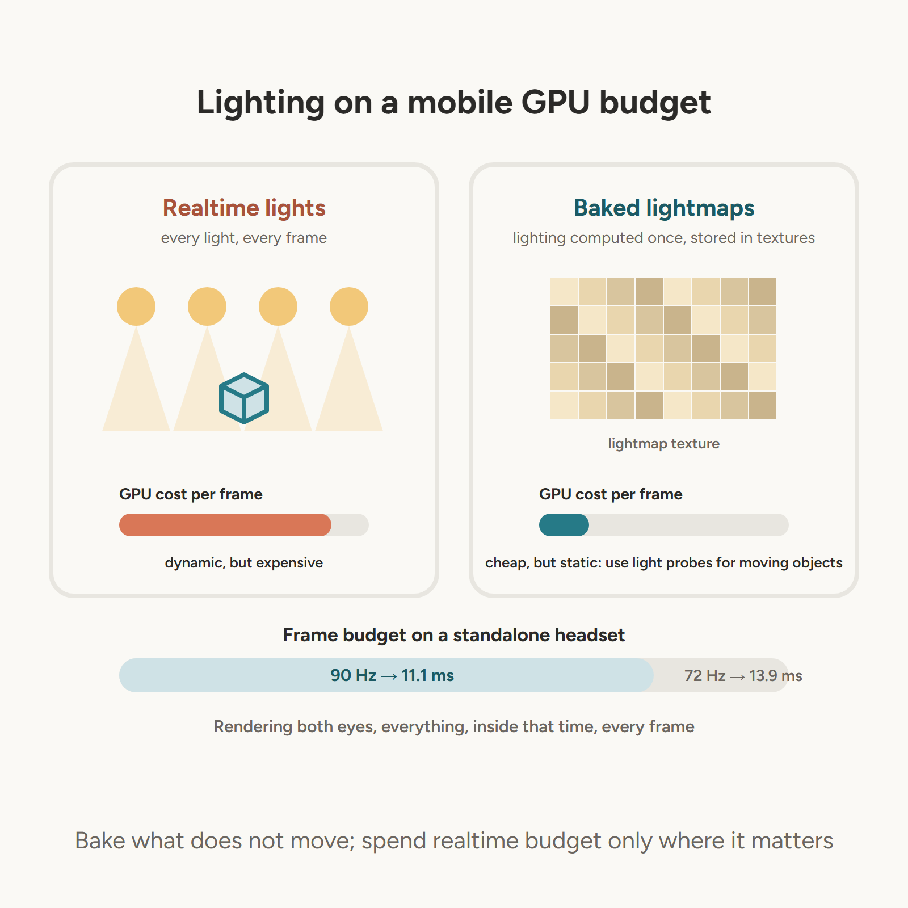
The trade-off is flexibility: baked lighting cannot change at runtime, so a light switch or a day-night cycle needs a different approach (blending between baked lightmaps, emissive materials, or a single carefully budgeted realtime light). This week’s lab works through lightmap baking, LODs and occlusion culling on a standalone headset.
8 6. Environmental Storytelling
The arrangement of a space can convey narrative and state without a word of text. Jenkins (2004) distinguishes several ways game spaces carry story; the most relevant here is embedded narrative, where the story has already happened and the user reconstructs it from what they find.
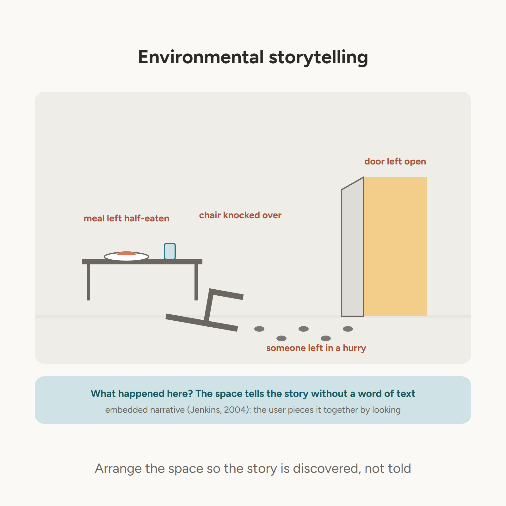
Guidelines:
- Place clues at sightline points and within the mid field, where they will be seen.
- Use changes to the space to show state: a door now open, a light now on, an object moved since the last visit.
- Layer clues so the experience still makes sense if some are missed, and rewards users who look closely.
Think back to the experiences you analysed in Week 6. Where did the space tell you something the UI did not, and where did the UI have to explain something the space could have shown?
9 7. Environment Decisions Are Comfort Decisions
Many environment choices affect comfort as much as locomotion does:
| Problem | Why it hurts | Instead |
|---|---|---|
| Low ceilings, tight corridors | Claustrophobia | 2.4 m or more, unless confinement is intended |
| Large high-contrast moving patterns | Vection: illusory self-motion, a sickness trigger | Calm textures on large surfaces, especially in the periphery |
| Unprotected heights and edges | Fear responses; users may step back in the real room | Railings, or keep the user away from the edge |
| Stairs with smooth locomotion | Repeated vertical bumps | Ramps, or teleport over stairs |
| Virtual floor not at real floor | Wrong scale, reaching for nothing, falls | Floor-level tracking origin |
| Small text far away | Unreadable, encourages leaning in | Size text for its viewing distance (Week 5) |
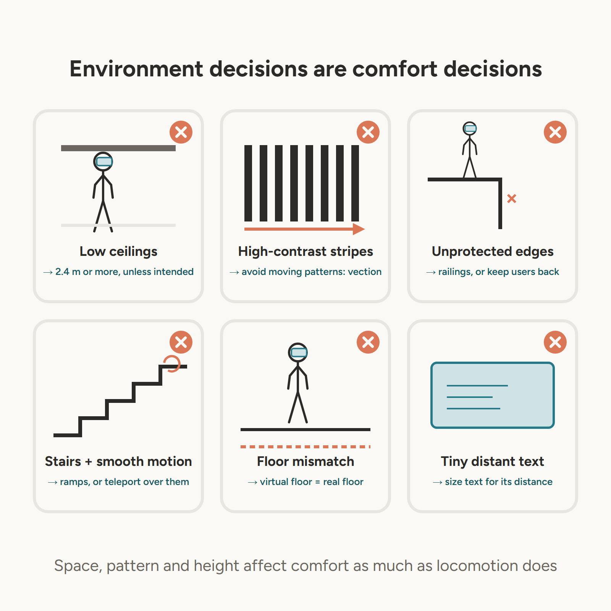
10 Summary
In XR the environment is the interface. Attention is directed by composition, light and form rather than by camera, and every one of those decisions is also a comfort and performance decision. Model at 1:1 and check scale in the headset; place content within comfortable viewing and reach zones; design sightlines; guide with paths, landmarks and light before reaching for signs; build signifiers into the world; bake what does not move; and let the space tell its own story.
11 Self-Check Questions
- Name three techniques film uses to direct attention, and explain why each is unavailable or harmful in XR.
- A user says a virtual kitchen “feels huge”. List three possible causes and how you would check each one.
- Where would you place a menu, an object to pick up and a distant landmark, in terms of distance from the user?
- Using Lynch’s five elements, describe how a user would find the exit of a virtual museum without any signs.
- Why should one visual signal be used for every interactive object, and never for scenery?
- Why is baked lighting preferred on a standalone headset, and what does it cost you in flexibility?
- Give two environment design choices that can cause discomfort even when the user is not moving.
12 References
- Alger, M. (2015) Visual Design Methods for Virtual Reality. MA thesis, Ravensbourne.
- Jenkins, H. (2004) “Game design as narrative architecture.” In Wardrip-Fruin, N. & Harrigan, P. (eds.) First Person: New Media as Story, Performance, and Game. MIT Press.
- Jerald, J. (2015) The VR Book: Human-Centered Design for Virtual Reality. ACM Books / Morgan & Claypool.
- Lynch, K. (1960) The Image of the City. MIT Press.
- Unity Technologies. Unity Manual: lightmapping, light probes, reflection probes, LOD and occlusion culling. docs.unity3d.com